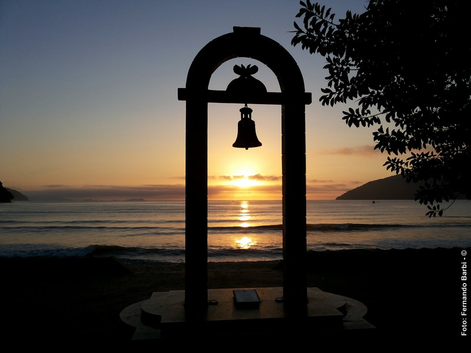
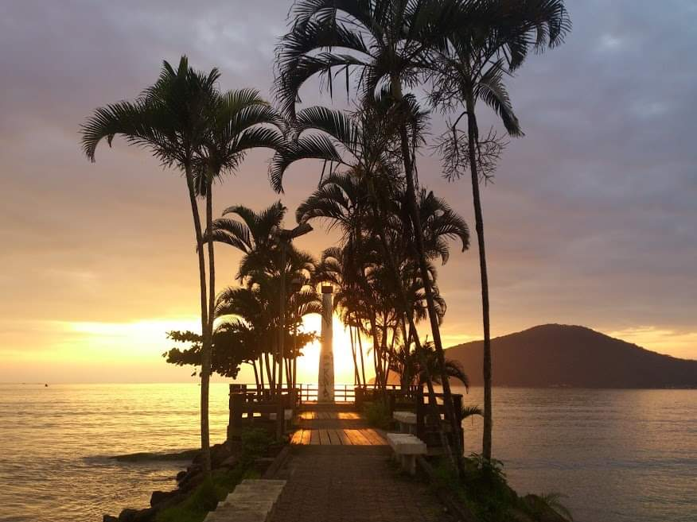

Nosso Apartamento Preparado Para Voçê

Localizado no Itaguá, o melhor bairro da cidade " Ubatuba Descanso e laser " oferece o que há de melhor para suas férias ou temporada. A apenas algumas quadras da orla, o Itaguá oferece toda comodidade para uma ótima caminhada a beira mar, onde se concentram os melhores restaurantes, bares, sorveterias e o comércio da cidade.
Nossa missão é: "Proporcionar paz e tranquilidade aos nossos hóspedes, com fácil acesso às práias próximas e muita facilidade para visitarem as práias mais distantes, pois estamos a poucos metros da rodovia que os levará às praias do norte ou do sul da cidade ".
Desenvolvido por: Antonio Carlos Amaral (carlos_ambr@yahoo.com.br) LinkedIn